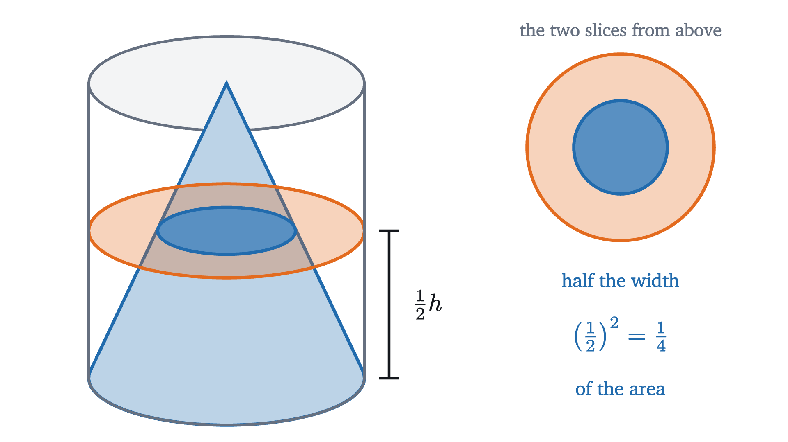
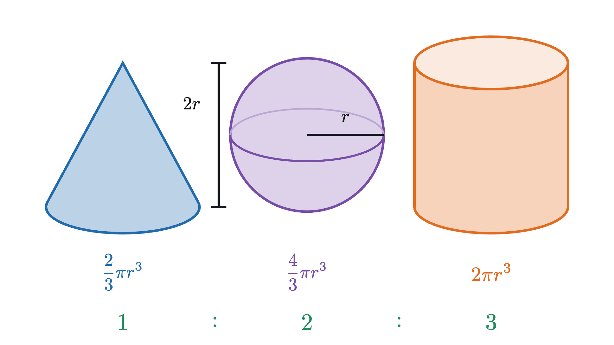
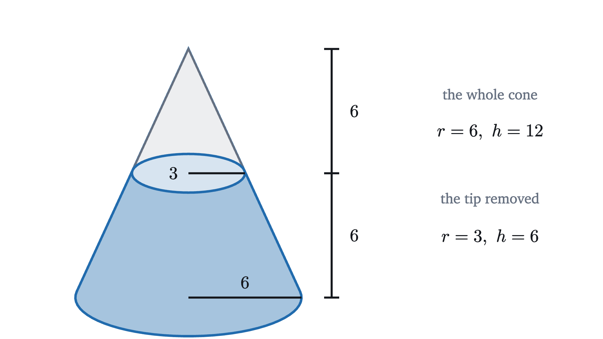

Why a cone is a third of a cylinder, and a sphere's volume
A cone holds exactly one third of the cylinder around it. A cube cut into three pyramids shows why, and the same slicing idea gives the volume of a sphere.
AssumesSimilar triangles and why area grows as the squareWhy the area of a circle is πr²
Take a cone and a cylinder with the same circular base and the same height, fill the cone with water and pour it into the cylinder. The water comes a third of the way up. A second cone brings it to two thirds, and the third fills the cylinder to the brim, with nothing left over. You can do this with paper models and rice, and it always comes out the same: three cones, not two and a half, not $\pi$.
A cylinder of radius $r$ and height $h$ has volume $\pi r^2 h$, the area of its base times its height. So the experiment says a cone has volume $\frac{1}{3}\pi r^2 h$. Where does a clean fraction like one third come from in a shape with a curved side and a sharp point?
The natural guess is one half
If you had to guess the fraction without the experiment, one half would be reasonable. Seen from the side, the cylinder is a rectangle and the cone is a triangle with the same base and height, and a triangle is half of its rectangle.
The experiment says the guess is wrong, and one slice shows why. Cut the cone and the cylinder with a horizontal plane halfway up.

Halfway up, the cone is half as wide as the cylinder. But the slice is a disc, and a disc half as wide has a quarter of the area, because scaling a figure by $k$ multiplies its area by $k^2$. The side view only sees one of the two directions in which the cone narrows. The cone loses material faster than the triangle suggests, so its share of the cylinder must be less than a half. That makes a third believable without explaining it.
A case that can be done exactly: three pyramids in a cube
A cone is hard to take apart, so start with a pointed solid that has flat sides. A pyramid is the solid made of all the segments from a point, its apex, to the points of a flat base. One pyramid whose volume needs no formula at all is hiding in a cube.
Pick one corner $A$ of a cube. Three of the cube’s faces meet at $A$, and the other three do not touch it. Join $A$ to every point of one of those three far faces, and you get a pyramid with a square base. Do the same for the other two far faces.
Every point of the cube lies on a segment from $A$ to one of the three far faces, so the three pyramids fill the cube, and they overlap only along shared faces. They are also congruent to one another: turning the cube a third of a turn about its diagonal through $A$ carries each of the three far faces to the next, and so carries each pyramid to the next. Three identical pieces that make up a cube of side $s$ have volume $\frac{1}{3}s^3$ each.
Each of these pyramids has a square base of area $s^2$ and its apex at height $s$ above the base. So for this one shape,
Pause and try
A cube of side $s$ can also be cut into six pyramids, by joining its center to each of its six faces. What are the base area and height of one of these pyramids, and what is its volume? Does “one third of base area times height” give the right answer for this shape too?
Show answerHide answer
Each pyramid has a face of the cube as its base, with area $s^2$, and its apex at the center of the cube, at height $\frac{s}{2}$ above the base. The six are congruent and fill the cube, so each has volume $\frac{1}{6}s^3$. The formula gives $\frac{1}{3} \cdot s^2 \cdot \frac{s}{2} = \frac{1}{6}s^3$, the same. The apex has moved from over a corner to over the middle, and the one third survives.
Sliding the slices: Cavalieri’s principle
Two examples from a cube are a long way from a cone. The pyramids so far have square bases, and their heights are tied to the size of the base. We need to know what happens to volume when the apex is moved, when the height is changed, and when the base is a different shape. One principle handles all three.
Think of a solid as a stack of thin slabs, like a deck of cards. Push the deck sideways so that it leans. Every card is still there and no card has changed, so the deck takes up the same amount of space as before.
With slabs of visible thickness the leaning stack is a staircase. Make the slabs thinner and more numerous and both stacks approach smooth pyramids, one upright and one leaning, while the argument stays the same. That suggests the following principle, named for Bonaventura Cavalieri, who published it in 1635.
I am going to use this without proving it, and you should know what is being left out. For solids made of finitely many slabs it is obvious, as with the cards. For solids with slanted or curved sides, a proof has to say what volume means, and the answer comes from integral calculus: the volume is the integral of the cross-sectional area over the height, so two solids with the same cross-sectional areas have the same volume. Note that the cross-sections need not have the same shape, only the same area, and that freedom is what we will use.
Here is what the principle buys. Take any pyramid or cone, with any flat base of area $B$ and with its apex at height $h$ above the plane of the base. Slice it parallel to the base at distance $t$ below the apex. The slice is a copy of the base scaled from the apex by the factor $t/h$, so by the square law for areas its area is
This expression contains only $B$, $h$ and $t$. It does not know the shape of the base or where the apex sits above it. So any two cones or pyramids with the same base area and the same height have equal cross-sections at every level, and by Cavalieri’s principle they have the same volume. A cone of radius $r$ and height $h$ has the same volume as a square pyramid of height $h$ whose base has area $\pi r^2$.
Pause and try
A cone has base radius 6 and height 12. Find the areas of its cross-sections at distances $t = 3$, $6$ and $9$ below the apex, as multiples of $\pi$. A pyramid of height 12 has a square base of side $6\sqrt{\pi}$. What are its cross-sections at the same levels?
Show answerHide answer
The base area is $B = 36\pi$. At distance $t$ below the apex the slice has area $36\pi \cdot (t/12)^2$, which is $36\pi/16 = 2.25\pi$ at $t = 3$, then $36\pi/4 = 9\pi$ at $t = 6$, and $36\pi \cdot 9/16 = 20.25\pi$ at $t = 9$. The pyramid’s base has area $(6\sqrt{\pi})^2 = 36\pi$, the same $B$, and the same height, so its slices have the same areas: $2.25\pi$, $9\pi$ and $20.25\pi$. The slices are squares in one solid and discs in the other, with equal areas.
So the volume of a cone or pyramid depends only on $B$ and $h$, and the cube gave its value in one case. To find it for every $B$ and $h$ we can count slabs.
Counting the slabs
Cut the height of the cone into $n$ layers of equal thickness $h/n$, by planes parallel to the base. Number the cuts from the apex down: the $k$th cut is at distance $t = kh/n$ below the apex, where the cross-section has area $B(k/n)^2$.
Replace each layer by a slab with straight sides. If each slab is given the area of the cross-section at the bottom of its layer, the slabs stick out a little beyond the cone, and the stack is too big. Its volume is
So everything comes down to the sum of the first $n$ squares, compared with $n^3$.
Pause and try
Compute $\dfrac{1^2 + 2^2 + \dots + n^2}{n^3}$ for $n = 1$, $2$, $3$ and $4$. Is it heading toward $\frac{1}{2}$ or toward $\frac{1}{3}$?
Show answerHide answer
For $n = 1$: $1/1 = 1$. For $n = 2$: $5/8 = 0.625$. For $n = 3$: $14/27 \approx 0.519$. For $n = 4$: $30/64 \approx 0.469$. It is already below one half and still falling, which rules out $\frac{1}{2}$ as the place where it settles.
The numbers go to one third. To prove it we need the sum of squares in closed form:
For $n = 4$ this gives $\frac{4 \cdot 5 \cdot 9}{6} = 30$, which matches $1 + 4 + 9 + 16$. A proof of the formula is one of the problems at the end. Dividing by $n^3$, and sharing the three factors of $n$ among the three factors on top,
As $n$ grows, $\frac{1}{n}$ shrinks toward zero and the right side closes in on $\frac{1}{6} \cdot 1 \cdot 2 = \frac{1}{3}$. The 3 in the cone formula is the 3 in “the sum of the first $n$ squares is about $\frac{1}{3}n^3$”.
The proof is the animation written down: the upper bound is the stack around the cone and the lower bound is the stack inside it. It is the same trap that caught the area of a circle between two polygons. Besides Cavalieri’s principle, it rests on the square law for the areas of the slices and on the idea of a quantity closing in on a limit.
The result agrees with the cube: for $B = s^2$ and $h = s$ it gives $\frac{1}{3}s^3$. It also explains the failed guess. In the plane, a triangle’s slices have lengths that grow in proportion to $t$, and $\frac{1 + 2 + \dots + n}{n^2}$ closes in on $\frac{1}{2}$. In space the slices have areas that grow as $t^2$, and the fraction becomes $\frac{1}{3}$.
The sphere
A sphere has no flat base and no apex, so the cone formula does not apply to it. But Cavalieri’s principle does not care about apexes. If we can find a solid we understand whose slices have the same areas as the slices of a ball, we are done.
By symmetry it is enough to treat half a ball. Take a ball of radius 5 and cut it in half through its center, and stand the half on its flat face, like a dome. Slice the dome at height $y$ above that face.
Pause and try
For a dome of radius 5, find the area of the slice at height $y = 3$ and at height $y = 4$, as multiples of $\pi$. (Each slice is a disc. A point on its edge is at distance 5 from the center of the ball.) Then compare each with $25\pi - \pi y^2$.
Show answerHide answer
Let $x$ be the radius of the slice. The center of the ball, the center of the slice and a point on the edge of the slice form a right triangle with legs $y$ and $x$ and hypotenuse 5. At $y = 3$: $x^2 = 25 - 9 = 16$, so the area is $16\pi$. At $y = 4$: $x^2 = 25 - 16 = 9$, so the area is $9\pi$. And $25\pi - 9\pi = 16\pi$, $25\pi - 16\pi = 9\pi$. The slice at height $y$ has area $25\pi - \pi y^2$ exactly.
The expression $25\pi - \pi y^2$ is a difference of two areas we recognize. The first, $25\pi$, is the area of a disc of radius 5, the slice of a cylinder of radius 5 at every height. The second, $\pi y^2$, is the area of a disc of radius $y$, and a solid whose slice at height $y$ has radius $y$ is a cone as wide as it is tall, standing on its point. So the dome’s slices match those of a cylinder with a cone removed.
Now the volumes. The cylinder has volume $\pi r^2 \cdot r = \pi r^3$, and the cone, with the same base and height, has $\frac{1}{3}\pi r^3$. So the cylinder with the cone removed has volume $\frac{2}{3}\pi r^3$, and the dome, having the same slices, has the same volume. A whole ball is two domes.
The proof is complete given the two results it uses, Cavalieri’s principle and the volume of a cone. The theorem is due to Archimedes, who found it in the third century BC by a related route, balancing slices of a sphere, a cone and a cylinder against one another. For a ball inside the cylinder that just contains it, of radius $r$ and height $2r$, it says the ball fills exactly two thirds of the cylinder, and by ancient accounts a sphere and a cylinder were carved on his tomb.

Where the one third stops
The factor $\frac{1}{3}$ belongs to solids that taper to a point along straight lines, so that the slice at distance $t$ from the apex is a scaled copy of the base with area proportional to $t^2$. Change the way the solid tapers and the fraction changes. The dome is an example: it also narrows from a disc of radius $r$ to a point over a height $r$, and it fills two thirds of its cylinder, twice what the cone fills, because it bulges where the cone is straight.
A cone with its tip cut off has two faces of different sizes, and its volume is found by subtracting the missing tip from the whole cone, as in one of the problems below.
Cavalieri’s principle has its own conditions: the slices must be taken by parallel planes at the same heights in both solids, and it is their areas that must agree. Equal widths are not enough, as the cone and its side-view triangle showed.
Looking back
The obstacle was that there is no evident way to cut a cone into pieces that reassemble into a box. Two ideas got around it. The first was to compare slices instead of shapes: two solids with equal slices at every height have equal volume. That reduced every cone and pyramid to a single question about slices whose areas grow as a square. The second was to answer that question by trapping the volume between two stacks of slabs, which turned geometry into a statement about $1^2 + 2^2 + \dots + n^2$.
Both ideas are the beginning of integral calculus, where “volume is the sum of the slices” becomes a definition and sums like the one above are computed once and for all.
Check yourself
A cone and a cylinder have the same base and the same height. The cylinder holds 600 mL. How much does the cone hold?
Problems
Problem 1
Find the volume of a cone with base radius 6 and height 4.
Show solutionHide solution
$V = \frac{1}{3}\pi r^2 h = \frac{1}{3}\pi \cdot 36 \cdot 4 = 48\pi \approx 150.8$.
Problem 2
A pyramid has a square base of side 6. Each of its four triangular faces has height 5, measured from the middle of a base edge up to the apex, which is above the center of the base. Find the volume of the pyramid.
Show solutionHide solution
The height of the pyramid is the perpendicular distance from the apex to the base, which is not given. The center of the base, the midpoint of a base edge and the apex form a right triangle. One leg runs from the center to the middle of an edge and has length $6/2 = 3$. The hypotenuse is the height of a triangular face, 5. The other leg is the height $h$ of the pyramid, so $h = \sqrt{5^2 - 3^2} = 4$. Then $V = \frac{1}{3} \cdot 6^2 \cdot 4 = 48$.
Problem 3
A bowl has the shape of half a ball of radius 9 cm. How many liters does it hold? (One liter is 1000 cm³.)
Show solutionHide solution
Half of $\frac{4}{3}\pi r^3$ is $\frac{2}{3}\pi r^3 = \frac{2}{3}\pi \cdot 729 = 486\pi \approx 1526.8$ cm³, which is about 1.53 liters.
Problem 4
A conical glass, point down, is filled with water to half its depth. (a) What fraction of the glass’s full volume is the water? (b) To what fraction of the depth must it be filled to be half full?
Show solutionHide solution
(a) The water forms a cone that is a scaled copy of the whole glass, with scale factor $\frac{1}{2}$, since it shares the apex and both its depth and its radius are half as large. Scaling by $k$ multiplies volume by $k^3$, so the water is $\left(\frac{1}{2}\right)^3 = \frac{1}{8}$ of the glass. Check with the formula: $\frac{1}{3}\pi (r/2)^2 (h/2) = \frac{1}{8} \cdot \frac{1}{3}\pi r^2 h$.
(b) If the water reaches a fraction $k$ of the depth, its volume is $k^3$ of the glass. We need $k^3 = \frac{1}{2}$, so $k = \sqrt[3]{1/2} \approx 0.794$. The glass is half full when the water is about 79% of the way up. Check: $0.794^3 \approx 0.5006$.
Problem 5
For a cone of base area $B$ and height $h$, compute by hand the volume of the stack of 4 slabs around the cone and of the stack of 4 slabs inside it, as multiples of $Bh$. Check that $\frac{1}{3}$ lies between them, and explain why the two stacks differ by exactly $\frac{1}{4}Bh$.
Show solutionHide solution
Each slab has thickness $h/4$. The cross-sections at the four cuts, at distances $\frac{h}{4}, \frac{2h}{4}, \frac{3h}{4}, h$ from the apex, have areas $\frac{1}{16}B$, $\frac{4}{16}B$, $\frac{9}{16}B$ and $\frac{16}{16}B$. The outer stack uses all four:
The inner stack gives each layer the area at its top, so it uses areas $0$, $\frac{1}{16}B$, $\frac{4}{16}B$, $\frac{9}{16}B$:
And $0.219 < 0.333 < 0.469$. The two sums contain the same terms except that the outer one has the largest slab, of area $B$ and thickness $\frac{h}{4}$, and the inner one has a slab of area 0 in its place. So they differ by $\frac{1}{4}Bh$. With $n$ slabs the difference is $\frac{1}{n}Bh$ for the same reason, which is why the trap closes.
Problem 6
Prove that $1^2 + 2^2 + \dots + n^2 = \dfrac{n(n+1)(2n+1)}{6}$, as follows. (a) Check that $(k+1)^3 - k^3 = 3k^2 + 3k + 1$. (b) Add this identity for $k = 1, 2, \dots, n$ and observe what happens on the left side. (c) Solve for the sum of squares, using $1 + 2 + \dots + n = \frac{n(n+1)}{2}$.
Show solutionHide solution
(a) $(k+1)^3 = k^3 + 3k^2 + 3k + 1$, and subtracting $k^3$ leaves $3k^2 + 3k + 1$.
(b) On the left the sum is $(2^3 - 1^3) + (3^3 - 2^3) + \dots + \left((n+1)^3 - n^3\right)$. Each cube appears once with a plus sign and once with a minus sign, except the first and the last, so the left side is $(n+1)^3 - 1$. Writing $S$ for $1^2 + 2^2 + \dots + n^2$, the right side is $3S + 3 \cdot \frac{n(n+1)}{2} + n$.
(c) So $3S = (n+1)^3 - 1 - n - \frac{3n(n+1)}{2} = (n+1)^3 - (n+1) - \frac{3n(n+1)}{2}$. Factor out $(n+1)$:
Dividing by 3 gives $S = \frac{n(n+1)(2n+1)}{6}$. Check with $n = 3$: $\frac{3 \cdot 4 \cdot 7}{6} = 14 = 1 + 4 + 9$.

Problem 7
The figure above shows a cone of base radius 6 and height 12 cut by a plane parallel to its base, halfway up. Find the volume of the lower piece. What fraction of the original cone is it?
Show solutionHide solution
The lower piece is the whole cone with the tip removed. The whole cone has volume $\frac{1}{3}\pi \cdot 6^2 \cdot 12 = 144\pi$. The tip is a cone with apex at the same point, height 6 and radius 3 (half of each, since it is the whole cone scaled by $\frac{1}{2}$), so its volume is $\frac{1}{3}\pi \cdot 3^2 \cdot 6 = 18\pi$. The lower piece has volume $144\pi - 18\pi = 126\pi \approx 395.8$. The tip is $\frac{18}{144} = \frac{1}{8}$ of the cone, as the cube law for scaling predicts, so the lower piece is $\frac{7}{8}$ of it.
Problem 8
A ball of radius $r$ is cut by a plane at distance $r - a$ from its center, where $0 < a \le r$. The smaller piece is called a cap of height $a$. Use the comparison of the dome with the cylinder minus a cone to show that the cap has volume $\dfrac{\pi a^2 (3r - a)}{3}$. Check the formula for $a = r$, and evaluate it for $r = 5$, $a = 2$.
Show solutionHide solution
Stand the half ball on its flat face. The cap is the part of it between heights $r - a$ and $r$. At every height the half ball has the same cross-sectional area as the cylinder with the cone removed, so by Cavalieri’s principle, applied between the planes at heights $r - a$ and $r$, the cap has the same volume as the part of that solid between the same two heights.
That part is a slab of the cylinder, of volume $\pi r^2 a$, minus the part of the cone between heights $r - a$ and $r$. The cone has its apex at height 0 and radius equal to its height. Up to height $r$ it has volume $\frac{1}{3}\pi r^3$, and up to height $r - a$ it has volume $\frac{1}{3}\pi (r - a)^3$. So
Expanding, $r^3 - (r - a)^3 = 3r^2 a - 3ra^2 + a^3$, so
For $a = r$ the cap is the half ball, and the formula gives $\frac{\pi r^2 \cdot 2r}{3} = \frac{2}{3}\pi r^3$, as it should. For $r = 5$ and $a = 2$ it gives $\frac{\pi \cdot 4 \cdot 13}{3} = \frac{52\pi}{3} \approx 54.5$.